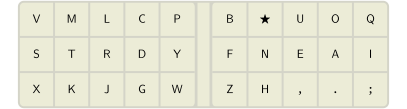

A guide to alt keyboard layouts (why, how, which one?)
Pascal Getreuer, 2022-05-15 (updated 2024-07-01)
Overview
This post is about switching from QWERTY to an alternative keyboard layout. Why and how do people switch? Which alt layout is best—Dvorak, Colemak, …?
Why do people want to use alt layouts?
The main motivation for alt layouts is better typing comfort. Alternatives to QWERTY dramatically reduce awkward typing motions such as same-finger bigrams (SFBs), reduce how much your fingers need to move (finger travel) to accomplish the same typing, and balance the typing workload over the fingers more evenly.
QWERTY was designed by Christopher Sholes in the early 1870s for the Sholes and Glidden mechanical typewriter. It’s often said QWERTY was designed to avoid the typebars from jamming, though it’s debatable whether that’s historically accurate.

What is obvious though is that QWERTY has a lot of SFBs, like
ed, un, rt, ol, much
more than any popular alt layout. Think about typing “loft”
or “unjust.” Those same-finger movements are slow and
awkward to type.
To be fair, QWERTY was basically the first successful layout, a pioneering solution to a tough problem. It shouldn’t be surprising that its metrics are far from optimal. At the time it was created, the activity of typing itself was new.
Should I use an alt layout?
It’s your choice. You don’t have to learn an alt layout.
Switching to an alt layout takes a lot of effort (at least a couple months of daily practice), and the benefits are not huge. I don’t mean to be discouraging, just raising some counterpoints:
If your hope is that changing layout will increase your typing speed, let me point out that speed is a matter of typing practice, not layout. There are plenty of extremely fast speed typists who use QWERTY. And the fastest typists (exceeding 300 wpm) don’t use regular keyboards at all, instead they use stenotype. See also I type XXX wpm – Is that fast?
If your motivation is typing comfort, consider first correcting your posture, switching to a split columnar keyboard (these keyboards are awesome!), try DreymaR’s Extend Layer, or switch to a modal editor like Vim—all of these things are more impactful and easier to do than learning a new layout.
So why do it? For me, switching to an alt layout is a long-term investment in my health and comfort. I will type a lot in my life (I work as a software engineer), so spending several months learning a new layout is a fair price.
Which alt keyboard layout should I learn?
There is no consensus on what is the “best” layout. No layout is perfect. Layout design is a balancing act of many competing objectives.
I highly recommend reading the Keyboard layouts doc. This is a valuable resource for anyone interested in alt keyboard layouts. It explains concepts and terminology for how to compare keyboard layouts, suggestions on how to choose a layout, and practical tips on how to learn a new layout. See also the recently released version 2 of the doc.
Here are metrics for a sampling of some better known layouts ordered by year of their release (lower is better for SFBs, LSBs, redirects, and off-home pinky use; higher is better for rolls). Metrics for English were computed by Oxey’s layout playground.
| Layout | SFBs | LSBs | Rolls | Redirects | Pinky off |
|---|---|---|---|---|---|
| QWERTY (1873) | 6.615% | 6.882% | 37.243% | 13.187% | 2.36% |
| Dvorak (1936) | 2.779% | 1.255% | 38.924% | 3.458% | 4.80% |
| Arensito (2001) | 1.545% | 1.945% | 49.514% | 12.385% | 1.21% |
| Colemak (2006) | 1.387% | 3.495% | 46.113% | 10.579% | 0.38% |
| Workman (2010) | 3.000% | 1.727% | 43.636% | 10.414% | 0.38% |
| MTGAP (2010) | 1.299% | 0.711% | 43.718% | 4.915% | 4.04% |
| Colemak-DH (2014) | 1.387% | 1.975% | 46.113% | 10.579% | 0.38% |
| Hieamtsrn (2014) | 1.173% | 0.833% | 42.665% | 2.679% | 3.88% |
| Halmak (2016) | 2.988% | 1.151% | 37.956% | 4.140% | 6.02% |
| Hands Down (2020) | 1.082% | 3.487% | 44.137% | 4.165% | 1.50% |
| BEAKL 19 (2020) | 1.831% | 2.843% | 42.239% | 3.378% | 2.29% |
| Engram (2021) | 1.504% | 0.625% | 42.180% | 4.515% | 6.67% |
| Semimak-JQ (2021) | 0.872% | 2.410% | 42.705% | 6.616% | 4.33% |
| APTv3 (2021) | 1.199% | 0.498% | 46.864% | 6.224% | 4.16% |
| Nerps (2022) | 1.280% | 1.955% | 44.709% | 2.942% | 1.52% |
| Canary (2022) | 0.962% | 2.675% | 48.537% | 7.152% | 3.50% |
| Sturdy (2022) | 0.935% | 2.413% | 48.082% | 5.399% | 2.36% |
| Gallium (2023) | 0.956% | 1.456% | 44.566% | 3.157% | 3.73% |
| Recurva (2023) | 0.829% | 1.844% | 48.176% | 5.549% | 5.17% |
See also this page for an expanded version of this table.
Colemak-DH is quite popular in the custom keyboard community. It is a solid, well-tested option. If you don’t know what to pick, go with Colemak-DH.

Some recent favorites on r/KeyboardLayouts are Semimak JQ, APTv3, Nerps, Canary, and Sturdy. Each of these layouts came from distinct design priorities, which is interesting to see reflected in the metrics in the table above.
Semimak was designed specially with finger speed in mind and a goal to reduce DSFBs. The genkey analyzer was developed to create Semimak.
APTv3 has a mention of inspiration from MTGAP and CTGAP. I don’t know beyond that what design is behind it. Quantitatively, APTv3 is solid across the metrics.
Nerps was created following Semimak’s design goals, but aiming for lower redirects and pinky use.
Canary is heavily Colemak inspired. It might be considered an evolution of Colemak to take row stagger into account, make the
Ykey more comfortable, and optimize the metrics, especially in SFBs and redirects.Sturdy is particularly remarkable in that it has very high rolls while attaining relatively low redirects. This is a rare combination, as these metrics are usually in opposition. It also scores well in SFBs and reasonably in other metrics.
✨ Magic Sturdy. If you are daring to consider something more experimental, I use Ikcelaks’ Magic Sturdy, a variation of Sturdy. The “magic” is a key whose function depends on the last pressed key, implemented using the Alternate Repeat Key. This key is used to remove the top SFBs and type common n-grams. It’s a magical typing experience!

A ★ = O C
★ = Y D ★ =
Y E ★ = U
G ★ = Y
I ★ = ON L
★ = K M ★ =
ENT N ★ = ION
O ★ = A
P ★ = Y Q
★ = UEN R ★ =
L S ★ = K
T ★ = MENT
U ★ = E Y
★ = P ⎵ ★ =
THE . ★ = ./
# ★ = INCLUDE
Outside the box
Most layouts are designed so that it could work with two-handed typing on a standard keyboard. But some layouts go outside the box. Arguably, these differ enough from standard typing that they are not just “layouts” but distinct input systems.
Layouts with thumb keys: Some layouts designed for split ergo keyboards use a thumb key (or sometimes multiple thumb keys) to type letters. The first such layout was the Maltron layout (1977), placing E on the left thumb. A more recent example is the RSTHD layout.
Many other thumb key layouts are catalogued and discussed in
Precondition’s post Pressing
E with the thumb. The advantages are gaining a free home row key and
removing conflicts with bigrams involving E. A downside is
that such layouts are not usable (without creativity) on conventional
keyboards. Another potential concern is the extra load on the thumbs.
See also PSA: Thumbs can get overuse
injuries.
One-handed layouts: Ardux is a one-handed keyboard system for use on 8 to 36 keys. All keys from a full keyboard are available through chording and layers. Many other one-handed typing systems have been developed. A well-known older one is Doug Engelbart’s five-key keyset (~1965).
How long does it take to learn an alt layout?
Realistically, expect it to take at least a couple months of daily typing practice. Switching to a new layout is a large undertaking. I have switched layouts a few times. My progression tends to be 40 wpm after the first month, 50 wpm after the second month, and 80 wpm after the first year. Other people have reported similar order-of-months experience to learn a new layout. It’s worth it for the comfort, but be patient and approach it as a long project.
The first couple weeks are the hardest since your typing will be frustratingly slow. Some people believe in switching to using the new layout alone “cold turkey” as the best way to learn. You can do that, but I don’t think it’s necessary. In the first couple weeks, I’ve found decent progress doing 30 minutes of practice a day on the new layout, then switching back to my familiar layout for the rest of the day. Then once getting to a usable 30 wpm or so, switching the new layout full time is more bearable.
Some advice, speaking from experience about my mistakes:
Check that you can type your computer password in the new layout… otherwise you might get locked out.
Use proper touch typing form when practicing. Keyboard layouts are designed assuming which finger presses which keys. This determines which key pairs create SFBs. If your typing form is nonstandard, this changes (likely dramatically for the worse) the layout’s frequency of SFBs. Learning a new layout is an opportunity to brush up your form. See also: Should I learn how to touch type?
Be careful about rearranging keys in a layout for the same reason. Shifting a row or swapping some keys arbitrarily is likely to ruin the layout. If you’re really tempted to do this, use a tool like the colemak mods analyzer or Oxey’s layout playground to check how metrics are affected.
For typing practice, MonkeyType
is excellent—once configured. Beware that by default MonkeyType samples
from a list of only 200 words, which is pretty useless. Under settings,
change the “language” setting to one of the larger word lists like
English 5K. See also Gary
Internet’s Typing Guide and the “Typing practice” section of the Keyboard layouts doc for
tips on how to use MonkeyType effectively.
Some other good typing practice sites are keybr.com and Ngram Type. There are many other great typing websites out there. To make practice more fun, I suggest trying several websites and revolving through the ones you like.
What about keycap labels?
You would think that to avoid confusion, changing to an alternative layout means you also need to rearrange or relabel your keycaps to agree with the layout. Fortunately, this turns out to be a non-issue in practice. Surely, you plan to touch type on the new layout? (You should!) With proper touch typing, you will never look at the keys, and keycap labels don’t matter.
While touch typing is the goal, there is still the problem of knowing where the keys are when getting started. Here is a strategy that works for me. Write down the new layout on paper. Write it again and again until you can reproduce it correctly from memory. For later reference, write the layout on a slip of paper and put it below your monitor. After a couple weeks of typing practice, you won’t need the paper slip anymore.